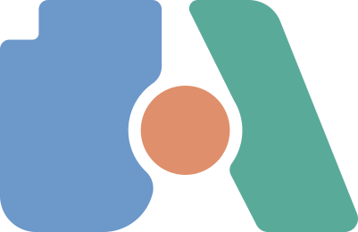
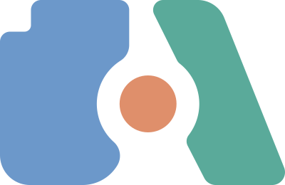
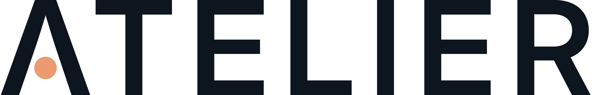

A system for distinct parts coming together.
The identity is an act of assembly, not a picture of a tool.
Atelier makes complex asset work legible. Texture, mesh and material are separate things; their relationship becomes visible when they approach, align and click into place.
Each shape has one job, one colour and its own unbroken silhouette.
Rounded tile with a notch at its top left, a vertical back and a face that leans towards the mesh. Carries the weight.
Holds its seat while the others close in.Block leaning towards the tile, its two inner edges parallel. Gives direction.
Comes in last, from the upper right, and makes the click.A perfect circle seated in both bites. Touches nothing.
Settles into the bites as the A closes.The A lives in the leaning edges and the gap at the top, never in an outline or a crossbar.
| Height | H = 260u | Master grid. Everything below is in these units. |
| Disc | r = 50u | The unit of clearspace. |
| Gap | g = 14u | Round the disc, and between tile and mesh at the top. |
| Bites | R = r + g = 64u | Both concentric with the disc. |
| Notch | 44 × 44u | The tile’s top left. |
| Corners | k = 7–40u | Eased: each turns gradually into its curve. |
| Lips | f = 18–22u | Tangent arcs where a bite meets a straight edge. |
| Tile lean | 7.081° | The face only; the back stays vertical. |
| Mesh lean | 26.8° | Both inner edges, parallel. The outer edge is 21.8°. |
Extended, the tile’s face and the mesh’s upper inner edge meet 9u above the mark: that apex is the implied A. The lean isn’t chosen; it’s solved so the tile’s top corner sits exactly g from the mesh. If a bite isn’t concentric with the disc, or any gap varies, the mark is wrong. Don’t adjust it by eye.
Not pastel. Not neon. Flat opaque fills on a dark neutral canvas, spread in lightness so they stay apart in grey.
Category colour. Textures only. L* 53.
Category colour. Meshes only. L* 64.
Category colour. Materials only. L* 71.
Canvas. Ink on light UI.
Cards and panels.
Primary text. Light canvas.
Body text and captions on dark. 9.9:1.
Rules and quiet icons. Never text.
Category colours say what something is. Status colours say how it ended. A status colour can take over the glyph, but only after the shape has already said it.
Asset dots, legends, the mark.
Asset dots, legends, the mark.
Asset dots, legends, the mark.
Never on buttons or links. On a progress bar, only as the material disc itself. Always on the app icon, lockups and static mark.
The sentence in Mist. Pieces keep their category colours while they work.
Hue 107°, well clear of mesh teal (165°). The A turns green, then back.
Hue 45°, clear of copper (20°). The whole ! turns amber.
Hue 347°, cooler than copper. The whole X turns rose.
Status always ships as icon + sentence + colour. Colour is the third cue, not the first.
Contrast measured against Charcoal #0D151F. On Surface #172331 every pair stays at or above 4.5 : 1 except the blue (4.0 : 1), so thin texture icons in dark UI take #6B95D4.
One family: Inter, with Inter Display for large sizes. Only uppercase labels get letter-spacing.
Inter Display SemiBold at +110 tracking, converted to outlines. The A is a crossbarless Λ with the material disc where the crossbar would be: the wordmark’s single custom move, and it repeats the mark’s idea. Minimum size: 12px cap height. Below that, use the mark alone.
Two drawings of the same mark. Use the master at 32px and above, and the small mark below 32px.
g = 14u, r = 50u, lips 18–22u. At 16px the gap becomes 0.9px and closes up.

g = 32u, r = 40u, lean 3.921°, lips 20–24u. Gaps stay a full 2px at 16px.
Enlarged from real 16px renders. In the master the gap drops below a pixel and the disc smears into the tile edge. The small mark keeps a clean dark ring round the disc.
How the pieces fit on a confirmed success, in about a second. Bring them in, wind up, hit hard, let it ring. The green arrives on contact.
cubic-bezier(0.65, 0, 0.35, 1)All three together: tile to its seat, disc 8u right of its seat, mesh 46u right and 60u up.
cubic-bezier(0.16, 1, 0.3, 1)The mesh comes to 16u right of its seat, already wound up. The disc waits.
cubic-bezier(0.9, 0, 1, 0.5)The mesh presses 3u past its seat as the disc seats. Only a confirmed success triggers this.
cubic-bezier(0.2, 0.9, 0.4, 1)Back to 1u out of the seat (110ms), then ease home (130ms). One rebound, never two.
On contact: the disc squashes to 0.88 × 1.12 and springs back (300ms). The glyph punches to 104.5% (70ms out, 260ms back). A green ripple leaves the disc (620ms). Green spreads outwards: disc, tile +60ms, mesh +120ms, 220ms each; 160ms after the effects, the A returns to its own colours (380ms). Optional sound: tick, thump, two-note chime.
Reduced motion: no travel, punch or ripple. The glyph cross-fades to each state’s pose (150ms out, 150ms in), the only fade the system allows. Complete still turns green, then returns. The icon and text carry the rest.
The pieces only take a meaningful shape when a real build, import or export event arrives. Until then they keep trying.
The pieces keep trying to fit: dock, test the fit, tap, hold, then try another. A known asset type gets its own loader.
Never A, ! or X. Never a percentage unless it’s measured.All three come in together, then the hard snap, squash, punch and ripple, with green spreading from the disc. Then the A takes back its colours.
The only state that forms the A.A balancing act: disc down as the dot, mesh stood on it, tile set on top slightly off-centre. Turns amber, catches its balance, keeps wobbling.
Always paired with the specific warning text.Tile and mesh flatten into bars and cross over each other at ±42°; the disc pins them. Clamps shut, turns rose.
No shaking. No particles. Always say why.Physical, never faded. Pieces move one at a time on planned curves that keep a 14u gap. Layer order is fixed (tile back, mesh middle, disc front), so nothing re-stacks. A move is never cut off.
Interface chrome stays neutral. Colour appears only where it names an asset type; progress is Paper on Surface, pushed by the copper disc.
Asset type only. Every stage row says what it’s working on.
Neutral shapes for state: done, working, waiting.
Paper on a quiet track, rolled forward by the material disc. Only for counted steps; with nothing to count, there’s no bar, only the working glyph.
Dark is preferred and light is supported. The mark never changes colour; only the canvas and the wordmark ink do.

Horizontal lockup: mark height = 2.7 × wordmark cap height, gap = 1.3 × cap height. The app icon is the master on Charcoal at 48px and up, and the small mark in the 16, 24 and 32px frames.
Atelier speaks like a useful creative tool, not a tech manifesto. Say what happened, to which asset, and what to do next.
Consistency comes from constraints, not from repeating decorative motifs.
A production handoff needs working behaviour, not just lovely screenshots.
Canonical assets: atelier-mark.svg, atelier-mark-small.svg, atelier-wordmark.svg, generated by scripts/brand_mark.py. Regenerate; never redraw or retype.
Work until an event arrives, then success → A + green, warning → !, error → X. The reference is docs/motion-v2/SPEC.md.
16, 24, 48 and 128px in dark and light. Confirm the switch to the small mark below 32px.
Text pairs ≥ 4.5 : 1 (page 06), the reduced-motion path, a 2px Paper focus ring with 2px offset, status never by colour alone.